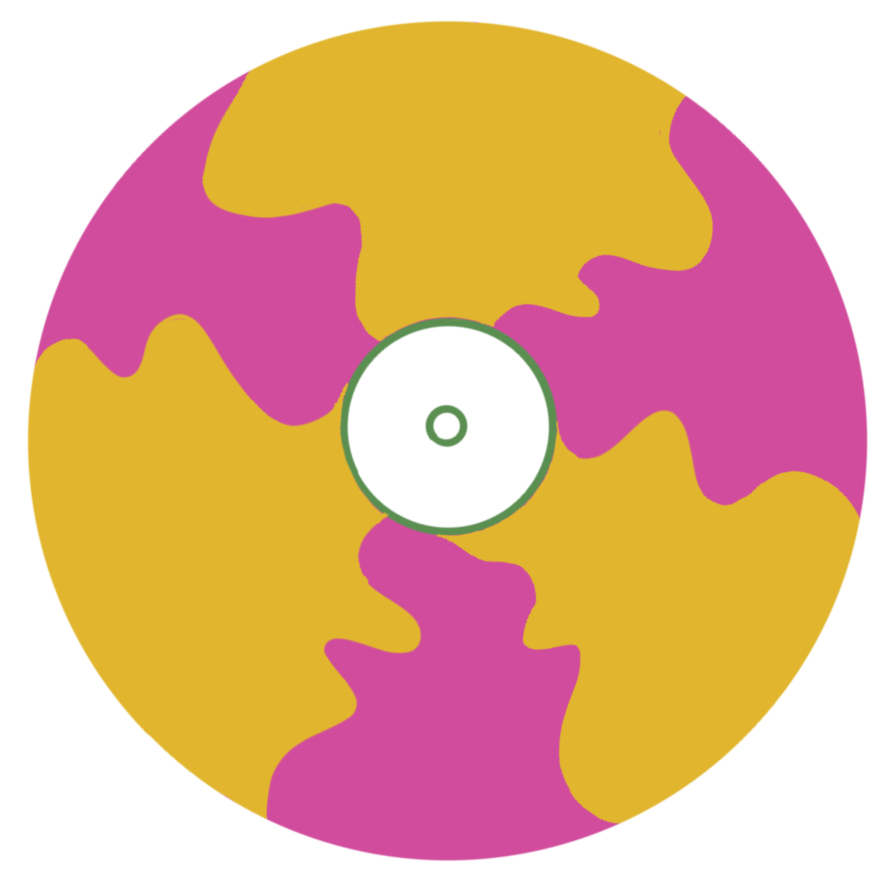

De tuinen van
Elke eerste weekend van de maand organiseert ‘De tuinen van’ een markt waar je alles kan vinden van planten en vinylplaten tot vintage vondsten. Zo kun je unieke items scoren voor een scherpe prijs en tegelijkertijd een nieuw leven geven aan spullen die anders verloren zouden gaan.
